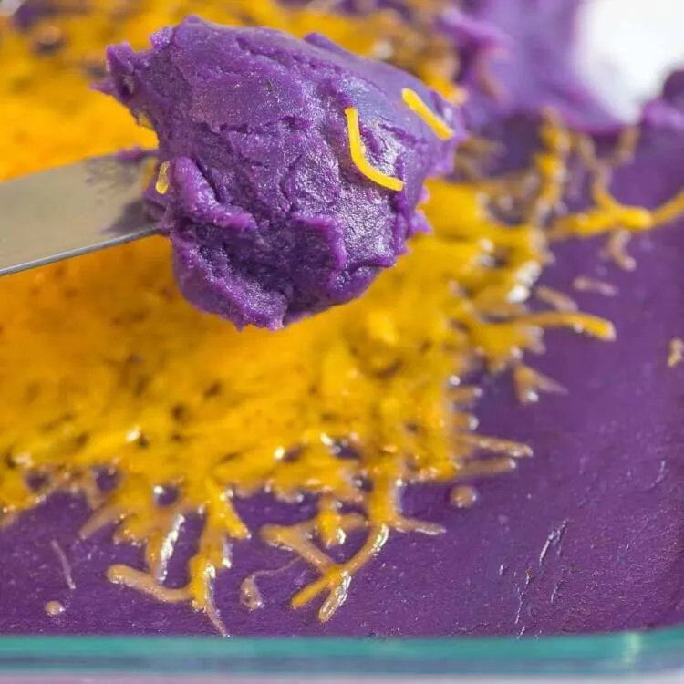
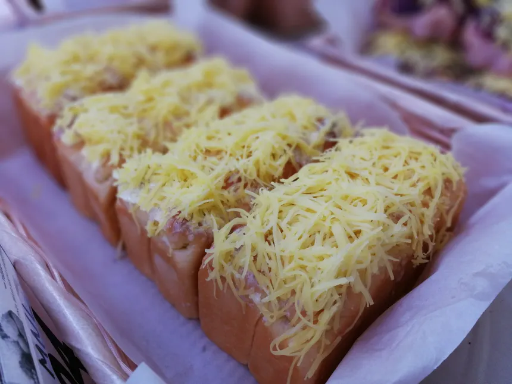
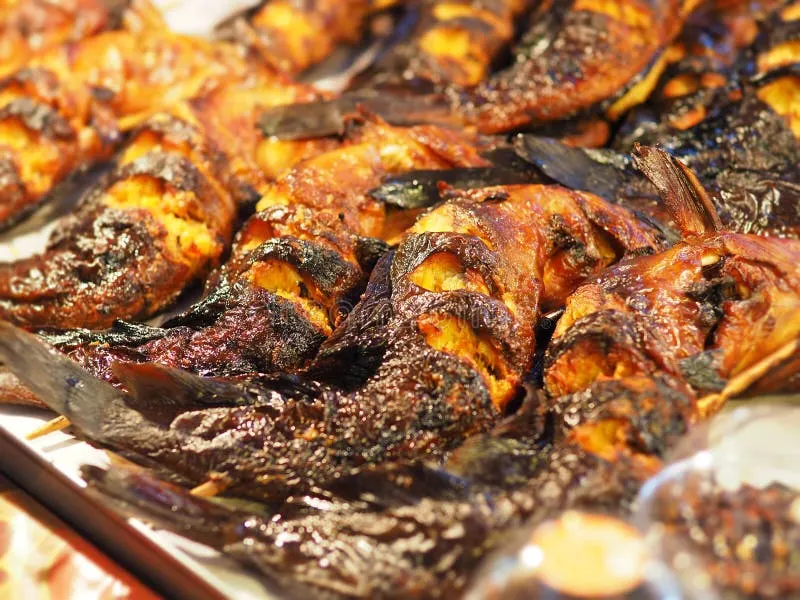
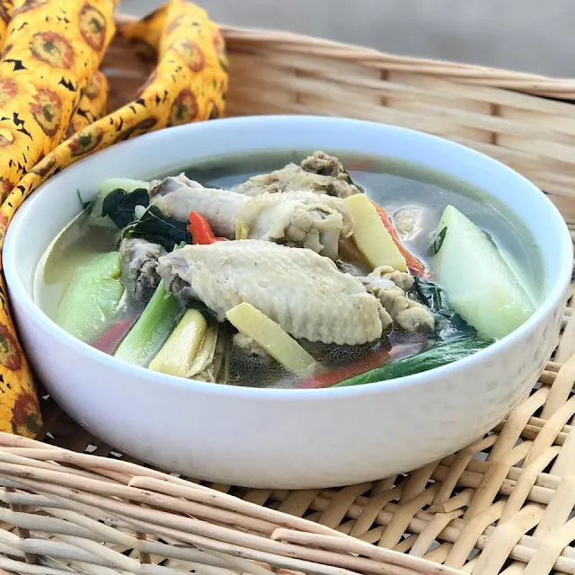

UBE HALAYA
A sweet dessert made from mashed purple yam, milk, and sugar.
Thick and creamy, usually served as dessert.
A sweet dessert made from mashed purple yam, milk, and sugar.
Thick and creamy, usually served as dessert.


Soft white cheese made from carabao’s milk.
Slightly salty and eaten with bread or rice cakes.
Artisan-style bread made by local bakeries.
Known for unique flavors and freshness.


Fish grilled over charcoal.
Served with vinegar or soy sauce.
Traditional soup made with native chicken.
Rich and flavorful dish.
